第 26 篇 · 收束实战 · 约 60 分钟
前面各篇是积木；这一篇把积木拼成三件能跑的小工程：多图全景、二维视觉防抖、合成 IMU 下的陀螺辅助 / Rolling Shutter 校正。每则都有参数表、预期效果和报错自检。读完你应能说清：整套笔记在「拼空间」和「稳时间」上各走到了哪里。
单独学「单应性」「光流」「角速度积分」，很容易会背名词却不会串起来。端到端的意思很朴素：
本篇三则故意用合成数据。好处是：不依赖你手机里的真全景或真 IMU 日志，也能在本机复现；坏处是：真实镜头畸变、曝光跳变、时钟不同步会更脏——那正是第 11、22、25 篇讨论的「工程脏活」。先把干净流水线跑顺，再去换真数据。
三则分别对应三条能力：A 拼空间（第 5–11 篇积木）、B 纯视觉稳时间（第 14–20 篇积木）、C 惯性辅助 + 行级时间差（第 21–23 篇积木）。可选的 Bundle Adjustment、3D 稳像、视频拼接在本篇只点名，不强制实现。
先看总图，再进细节。左边四条主线是「课」，右边三则是「作业」。
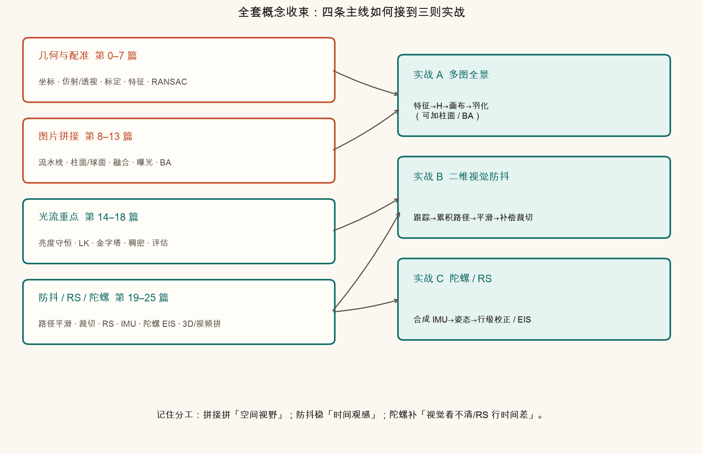
生活类比：学做菜时，刀工、火候、调味是分课练的；这一篇相当于做三道完整的菜——你可以对照菜谱检查「哪一步用了哪节课」。
站在原地，左右转着拍三张。每张视野有限，但相邻两张有重叠。目标：合成一张更宽的图，重叠区尽量不重影、接缝尽量不硬。
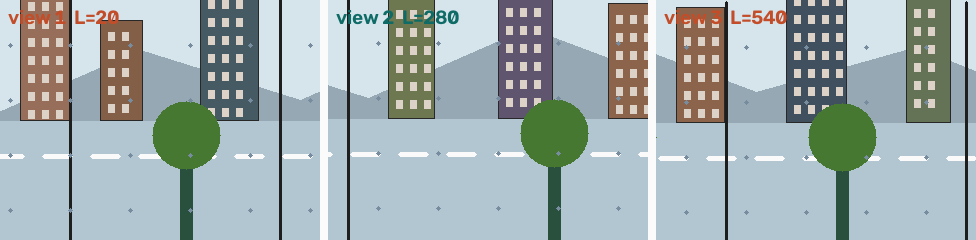
零基础版只记五步（对应第 5–11 篇）：
warpPerspective 把每张图变到同一坐标系。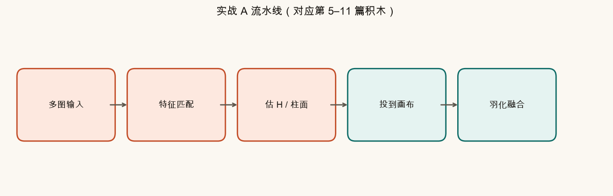
公式白话：若点在图 B 里是 (x, y)，想知道它在图 A 坐标系里落哪，就写
(x′, y′, w′)T = H · (x, y, 1)T，再除以 w′
人话：H 把「B 的像素地址」翻译成「A 的像素地址」。多图时，通常选一张锚图，把其它图都翻译到锚图坐标系（本脚本以中图为锚）。
环拍很宽时，硬用一张「平面」画布会把两端拉歪。柱面思路：先把每张图「卷」到圆柱侧面再展开，再在柱面坐标里对齐。本篇给出单张柱面展开示意；完整柱面多图拼接是第 9 篇的主题。
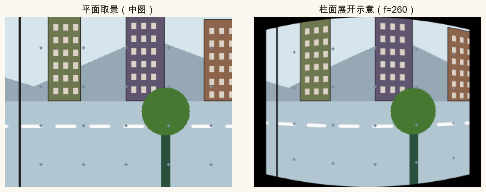
Bundle Adjustment（可选）：三图链式估 H 会累积误差。BA 的白话是「把所有相机位姿和匹配点一起微调，让整体更自洽」。第 12 篇展开；本脚本不强制跑 BA，以免依赖过重。
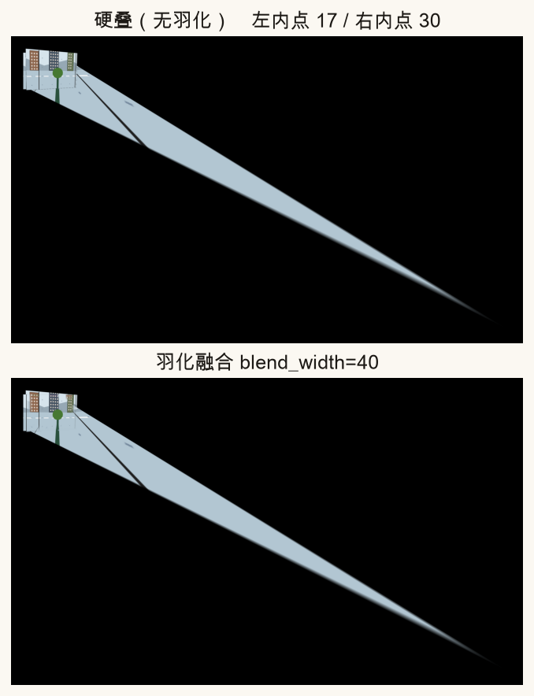
成功时你应看到：画布明显比单张宽；楼边大致连续；路面虚线不断成两截。失败时常见：整幅错位、局部重影、大片黑边。
手持边走边拍：画面里既有你故意的平移运镜，又有高频手抖。目标：压掉手抖，尽量保留运镜，并裁掉补偿后露出的黑边。
最小可行二维 EIS 四步（第 19–20 篇）：
warpAffine，最后按裁切比裁掉黑边。补偿位移 ≈ smooth(path) − path
人话：路径比理想线高了 5 像素，就把画面往回挪 5 像素。平滑窗口越大，越「稳」，也越容易把故意运镜抹平，看起来像在「漂」。
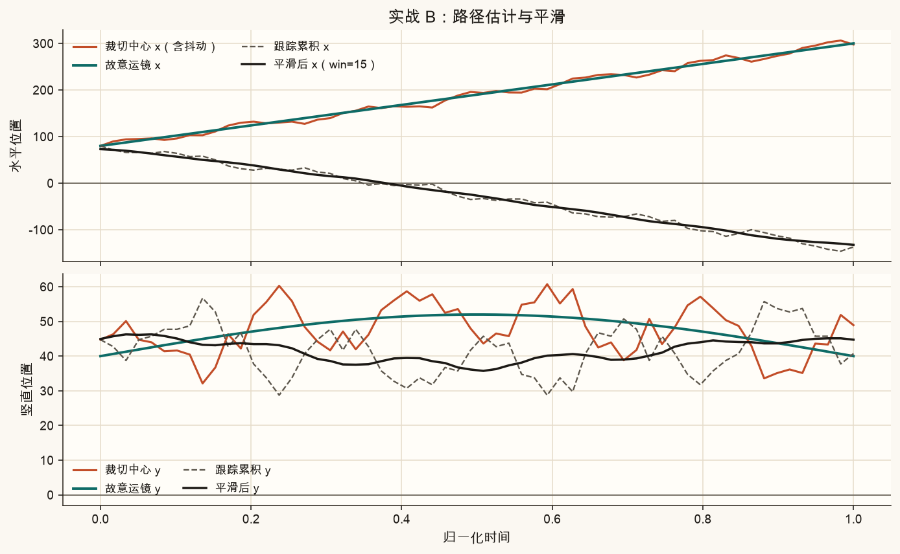
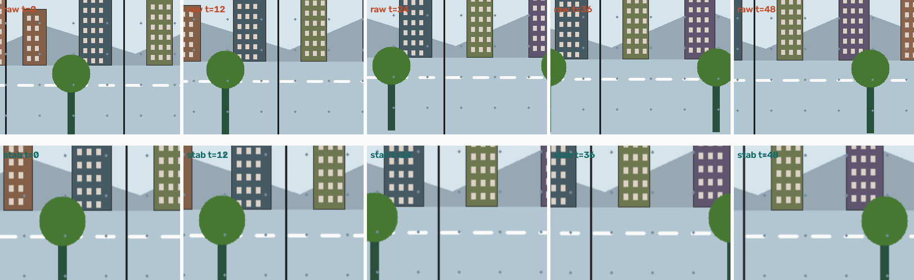
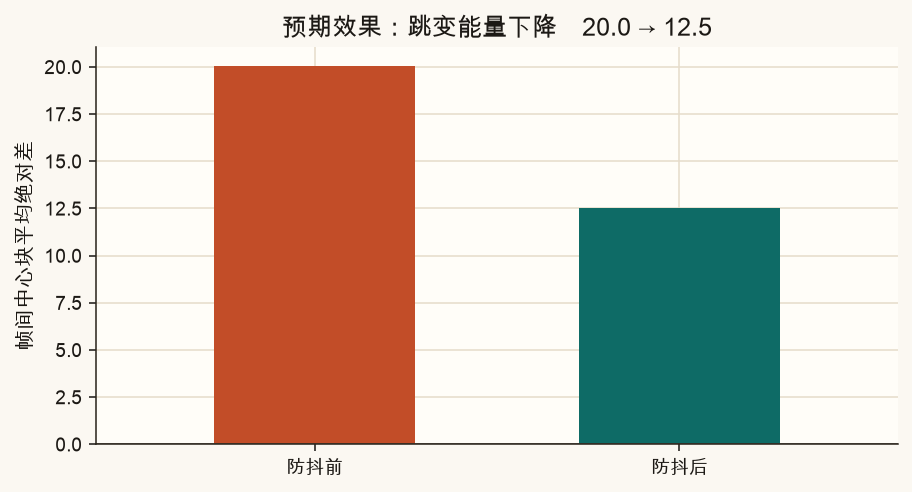
手机大多是卷帘快门（Rolling Shutter）：一行一行曝光，不是整幅同一时刻。手持快速转动时，竖杆会变成斜杆，整幅像果冻——这是第 21 篇的核心现象。
纯视觉在模糊、低纹理、猛甩时容易跟丢。陀螺仪直接测角速度，短时间很准（长时间会漂）——第 22–23 篇。
没有真机日志时，脚本会合成一段三轴角速度，并人为制造 RS 斜切，再演示「已知角速度 → 按行反向挪」的校正。
最小模型（只演示绕竖直轴 yaw）：
第 y 行曝光时刻 ≈ (y / H) · Treadout
该行水平错位 ≈ f · tan(ω · trow) ≈ f · ω · trow（小角度）
人话：越靠下的行，曝光越晚，相机又多转了一点，竖线就被拧斜。校正 = 用陀螺告诉你的 ω，把每一行拧回去。
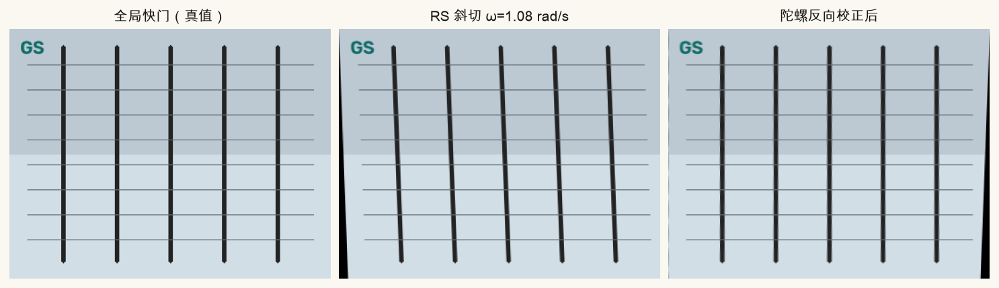
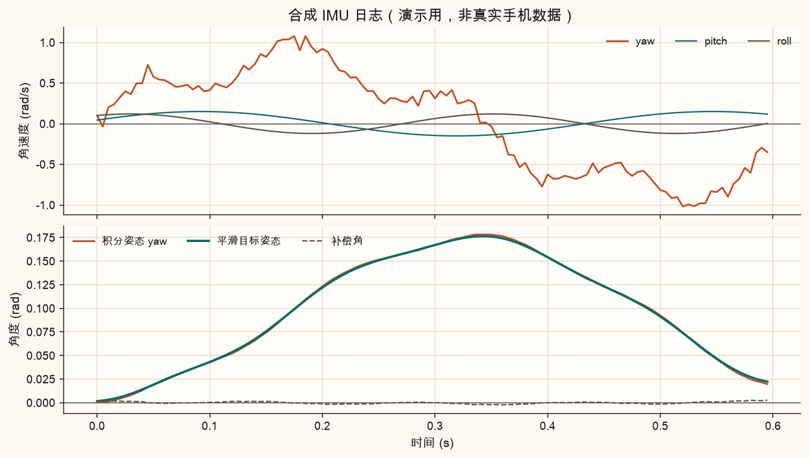
真机还要处理：陀螺到相机的外参、时间戳对齐、读出方向（从上到下还是反向）、与视觉融合抑漂移。本篇只保证「合成数据上公式方向正确」，把坑留在清单里提醒你。
不装 Python 也能感受两件关键旋钮：全景羽化带宽、防抖平滑窗口。陀螺强度请用脚本顶部参数试。
| 参数 | 默认 | 变大时 | 变小时 | 主要影响的图 |
|---|---|---|---|---|
PANORAMA_BLEND_WIDTH |
40 | 接缝更软，重叠区可能发糊 | 接缝更硬，易见拼接线 | ch26_my_panorama.png |
STABILIZE_SMOOTH_WIN |
15 | 更稳，运镜易「漂」 | 更跟手，残余抖动更多 | ch26_my_stabilize.png |
GYRO_RS_STRENGTH |
1.0 | 斜切更夸张，校正量同比放大 | 斜切变弱，接近全局快门 | ch26_my_gyro.png |
| 实战 | 输入 | 关键步骤 | 成功时你应看到 |
|---|---|---|---|
| A 全景 | ≥3 张有重叠图 | ORB→H→warp→羽化 | 更宽画布；RANSAC 内点充足；羽化后缝不明显 |
| B 二维防抖 | 晃动帧序列 | LK 跟踪→累积→平滑→补偿裁切 | 路径毛刺下降；帧间跳变指标下降；黑边被裁掉 |
| C 陀螺 / RS | 合成 IMU + RS 图 | ω→行位移 / 姿态差补偿 | 竖杆斜率接近 0；校正图更像全局快门真值 |
先对现象，再改参数。下图与表格一致，可当墙纸式速查。
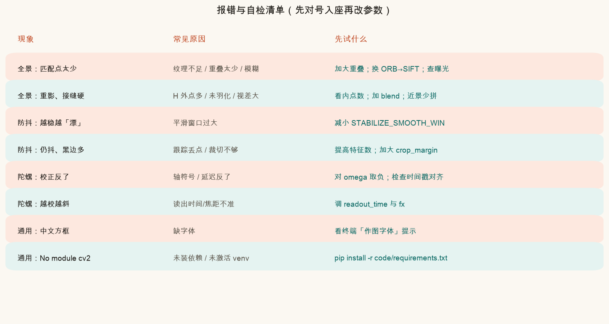
| # | 检查项 | 通过标准 |
|---|---|---|
| 1 | 虚拟环境与依赖 | 能 import cv2, numpy, matplotlib |
| 2 | 脚本退出码 | 终端打印「自检通过」且无 traceback |
| 3 | 全景内点 | 左右 RANSAC 内点均 ≥ 8（脚本硬门槛） |
| 4 | 防抖指标 | ch26_stabilize_metric.png 中「后」柱低于「前」 |
| 5 | RS 斜率 | 校正后斜率接近 GS；终端打印的三数合理 |
| 6 | 「改这里」隔离 | 只动顶部三参数时，仅 ch26_my_*.png 应明显变 |
在本系列根目录（能看见 index.html）执行：
source .venv/bin/activate # Windows: .venv\Scripts\activate
MPLCONFIGDIR=/tmp/mpl-cache python code/ch26_projects.py成功时会写出课文对照图与三张「我的」图，并打印「自检通过……」。主要文件：
assets/figures/ch26_concept_map.png、ch26_error_checklist.pngch26_panorama_*.png、ch26_stabilize_*.png、ch26_gyro_*.pngassets/images/ch26_panorama_inputs.png、ch26_stabilize_compare.pngch26_my_panorama.png、ch26_my_stabilize.png、ch26_my_gyro.png打开 code/ch26_projects.py 顶部「改这里」。课文对照图仍按固定参数重画；只有 ch26_my_*.png 跟你的旋钮走。
PANORAMA_BLEND_WIDTH 改成 4，再改成 80，对比 ch26_my_panorama.png 接缝软硬。STABILIZE_SMOOTH_WIN 改成 5，再改成 31，看平滑曲线是贴着抖，还是几乎拉成直线。GYRO_RS_STRENGTH 改成 0.3 与 2.0，观察斜切强度与校正后竖杆。crop_margin 在函数调用处改大，黑边更少但视野更窄——体会第 20 篇的裁切比权衡。先自己答，再展开。建议四题都过一遍再关页。
锚图定义画布坐标系。左图的 H 把左图像素映射到中图坐标系；右图的 H 把右图像素映射到中图坐标系。然后三者叠在同一张画布上再融合。
每帧图像已经处在「原路径」对应的取景上。要把它挪到「平滑路径」附近，需要的是二者之差。只拿平滑路径当绝对坐标，没有和当前帧对齐，补偿方向会对不上。
全局快门整幅同一时刻，抖动主要表现为整幅位移/旋转；RS 是不同行不同时刻，同一竖线在行间被陆续扭歪，呈现斜切/果冻。因此校正量随行号（曝光时刻）变化，必须按行（或按扫描块）施加不同 warp。
会出现「漂」：故意的平移/跟拍被抹平，画面像在缓慢游荡。路径优化的目标正是压高频抖动、保留低频运镜；窗口过大等于把低频也砍了。
纯视觉：能直接对齐像素，对场景结构敏感，可辅助抑漂移；在低纹理、运动模糊、猛甩时易跟丢。陀螺：短时旋转测得稳，不依赖纹理，擅长 RS 行级校正与快速转动；但有积分漂移，且需要外参与时间对齐。工程上常联合使用。
若你从第 0 篇一路走到这里：坐标与变换是语法，特征与光流是动词，单应与路径是句子，全景与稳像是完整段落。回去翻目录时，把每一篇当作查字典，而不是从头再读一遍。
本篇是目录上的收束篇。若要复习，建议按需求跳读：拼全景回第 8–11 篇；光流回第 14–18 篇；稳像与陀螺回第 19–23 篇。